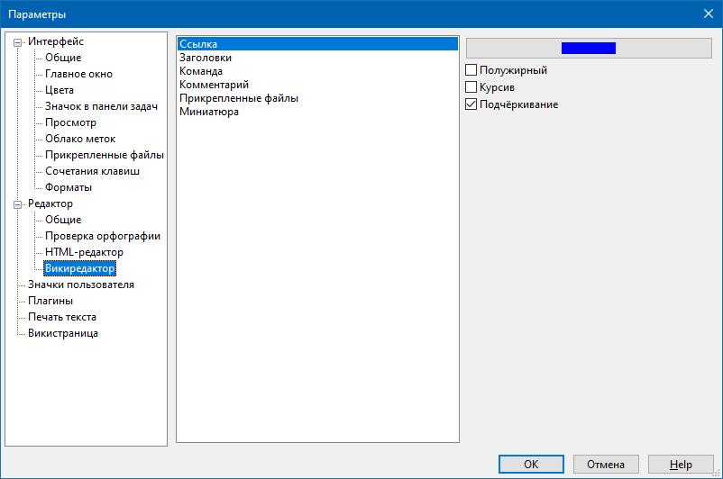

Редактор - Викиредактор

Данный раздел содержит настройки для раскраски некоторых элементов викинотации: ссылок, заголовков и викикоманд (то, что располагается между скобками (: ... :) )
Имя шрифта и его размер устанавливаются в разделе Редактор - Общее.